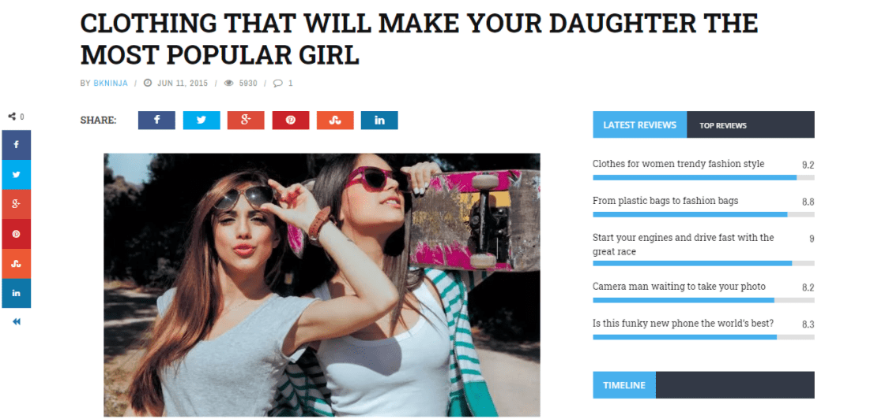

Las 7 mejores plantillas web para noticias y revistas en 2024
Este artículo presenta una selección de las mejores plantillas web para crear sitios de noticias y revistas, destacando sus características y ventajas.
Leer másEste artículo presenta una selección de las mejores plantillas web para crear sitios de noticias y revistas, destacando sus características y ventajas.
Leer másEste artículo analiza cinco ejemplos de sitios web de noticias que destacan por su diseño y capacidad para atraer visitas.
Leer másExplora una selección de plantillas de sitio web diseñadas para ofrecer la mejor experiencia al usuario en portales de noticias.
Leer más
Descubre los mejores plugins de noticias para WordPress que te permitirán añadir actualizaciones en directo a tu sitio web.
Leer másMi nombre es Andres Henao y soy estudiante de cuarto semestre de tecnología en desarrollo de software.
Contacto: w.henao@utp.edu.co